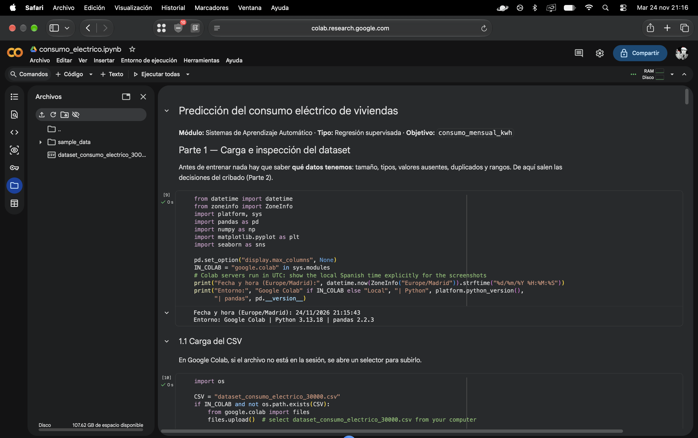
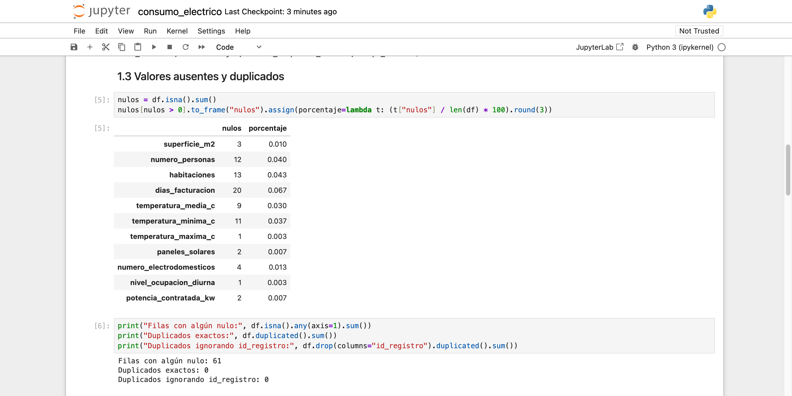
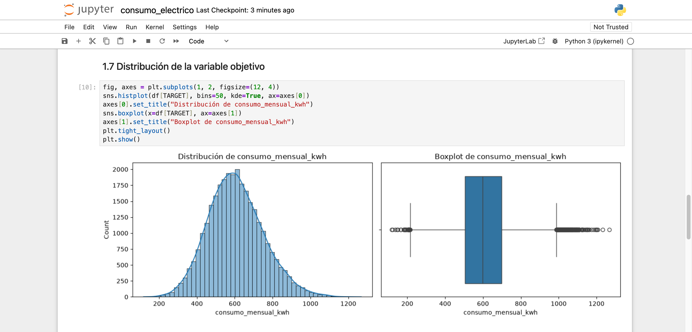
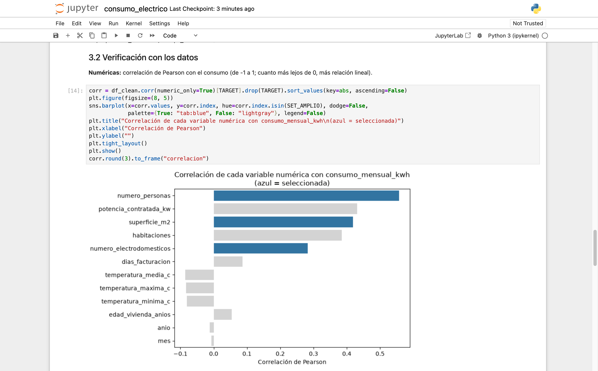
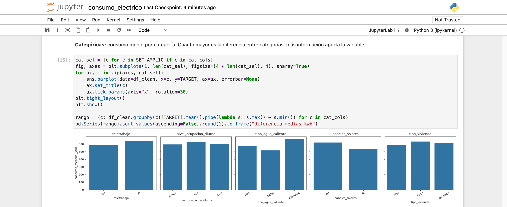
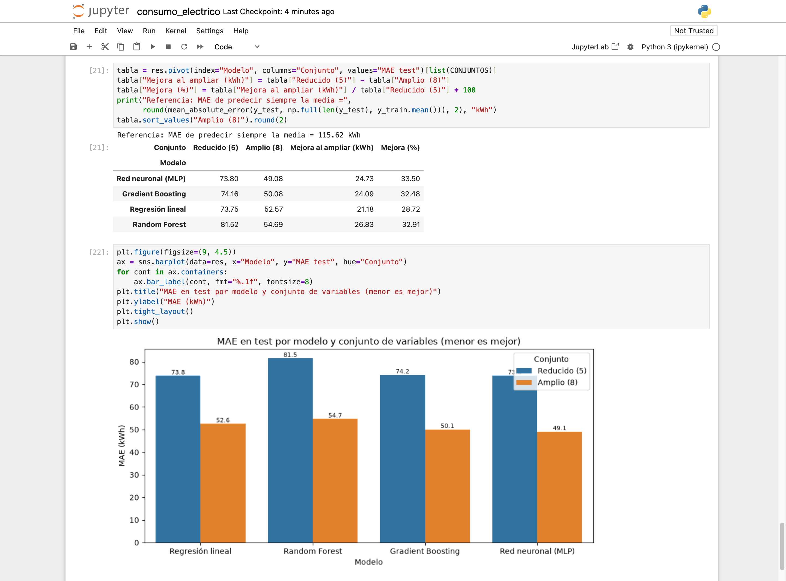

KWHML
Predecir cuántos kilovatios hora consume una vivienda antes de que llegue la factura.
Índice
- 01El encargop. 03
- 07Entrenamiento de los modelosp. 14
- 02Entorno de trabajop. 04
- 08Resultados: MAEp. 15
- 03Inspección del datasetp. 05
- 09Sobreajuste y validación cruzadap. 17
- 04Cribado de datosp. 07
- 10Preguntas de evaluaciónp. 19
- 05Selección de variablesp. 08
- 11Conclusiónp. 22
- 06Preparación de los datosp. 12
- 12Bibliografía y anexop. 23
«Construir diferentes modelos capaces de predecir cuántos kilovatios hora consume mensualmente una vivienda.»
30000
Registros de viviendas, 24 columnas numéricas y categóricas.
KWH
consumo_mensual_kwh: regresión supervisada.
70/30
Entrenamiento y test, con dos conjuntos de variables.
MAE
Error medio absoluto en kWh: cuanto menor, mejor.
00/env
El cuaderno, ejecutado en Google Colab
- Desarrollo en local con un entorno virtual ligero (
.venv, ~600 MB) y JupyterLab. - Ejecución final en Google Colab: el mismo cuaderno, sin cambios.
- La primera celda imprime fecha, hora (Europe/Madrid) y entorno: Colab trabaja en UTC.
random_state=42en división y modelos: resultados reproducibles.

01/eda
Conocer los datos antes de entrenar
- 12 numéricas y 10 categóricas, además del identificador y el objetivo.
- 61 filas con algún nulo (0,2 %), repartidas en 11 columnas.
- 0 duplicados, incluso ignorando
id_registro. - Sin valores imposibles: superficie de 30 a 284 m², consumo de 118 a 1268 kWh, y siempre mínima ≤ media ≤ máxima.
- Categorías sin erratas: la variable objetivo tiene forma de campana, media 606 kWh.


16°C
El mismo clima en enero que en julio
La temperatura media ronda los 16 °C en los 12 meses y en las cuatro zonas climáticas. En el mundo real es imposible: el dataset es sintético.
Consecuencia para el modelo: mes y zona_climatica no transportan información climática. Si el clima influye, lo hará a través de la temperatura, que es la causa directa.

02
Eliminar 61 filas sin introducir sesgo
Borrar filas solo sesga el modelo si las que faltan son distintas al resto. Se comprueba antes de decidir:
| Grupo | Filas | Media | Mediana | Desv. típica |
|---|---|---|---|---|
| Filas con algún nulo | 61 | 610,6 | 599,3 | 150,2 |
| Filas completas | 29.939 | 606,2 | 597,9 | 146,0 |
Perder 61 de 30.000 filas no reduce la información disponible.
Mismo consumo que el resto: eliminarlas no sesga.
Inventar valores exige calcularlos solo con el entrenamiento (data leakage): no compensa.
03
Tres preguntas antes de aceptar cada variable
El objetivo es energía. La tarifa cambia lo que se paga, no lo que se consume: tipo_tarifa fuera.
Mejor la causa directa: el aislamiento antes que la edad, la temperatura antes que la zona.
Una variable redundante ocupa un hueco sin aportar nada nuevo.
La lógica propone las variables; los datos las verifican.
Dos conjuntos: 5 y 8 variables
| Variable | Conjunto | Por qué afecta a los kWh | Dato |
|---|---|---|---|
numero_personas | Reducido | Más duchas, lavadoras, cocina e iluminación. | r = 0,56 |
superficie_m2 | Reducido | Más metros que iluminar y climatizar. | r = 0,42 |
numero_electrodomesticos | Reducido | Más aparatos conectados. | r = 0,28 |
teletrabajo | Reducido | Más horas en casa con equipos encendidos. | Δ 50 kWh |
nivel_ocupacion_diurna | Reducido | Presencia durante el día. | Δ 35 kWh |
tipo_agua_caliente | Amplio | Con termo eléctrico toda esa energía pasa por el contador; con gas no; la solar térmica solo usa apoyo eléctrico. | Δ 149 kWh |
paneles_solares | Amplio | La vivienda autoproduce y toma menos de la red. | Δ 89 kWh |
tipo_vivienda | Amplio | Una casa tiene más fachada expuesta que un piso de igual superficie. | Δ 41 kWh |
r = correlación con el consumo · Δ = diferencia entre la categoría que más y la que menos consume
03/check
La intuición falló una vez, los datos lo detectaron
- Calefacción y aire acondicionado consumen mucho en una casa real, pero aquí apenas cambian el consumo: 17 y 1 kWh.
teletrabajopesa más que la ocupación diurna, y en este dataset son independientes.- Las temperaturas tienen una correlación de solo −0,08.


Lo que se queda fuera, y por qué
| Variable | Criterio | Evidencia |
|---|---|---|
habitaciones | Redundante | Correlación de 0,85 con superficie_m2. |
potencia_contratada_kw | Redundante | Correlación de 0,78 con numero_personas; además es consecuencia del consumo previsto, no su causa. |
tipo_tarifa | Precio | Cambia lo que se paga, no los kWh (Δ 6 kWh). |
zona_climatica, mes | Indicador | Misma temperatura en todas las zonas y meses (Δ 7 kWh; r = −0,01). |
edad_vivienda_anios | Indicador | Aproximación indirecta del aislamiento (r = 0,05). |
id_registro | Enunciado | Solo identifica la fila. |
04/prep
Números que no inventen un orden
Codificar Piso=0, Casa=1 y Adosado=2 haría creer al modelo que un adosado es «el doble» que una casa. One-Hot da a cada categoría su propia columna.
- 70 / 30: 20.957 filas para entrenar y 8.982 para test.
- El preprocesado se ajusta solo con el entrenamiento dentro de un
Pipeline: sin data leakage.
| Tipo | Transformación | Motivo |
|---|---|---|
| Numéricas | StandardScaler | La regresión lineal y la red neuronal combinan pesos: sin escalar, la superficie (30–284) dominaría a las personas (1–8). |
| Binarias | 0 / 1 | Dos valores: no hay orden falso que inventar. |
| Nominales | One-Hot | Sin orden entre categorías. |
| Ocupación diurna | One-Hot | Tiene orden, pero el efecto no es lineal: Baja 597 ≈ Media 596 < Alta 631 kWh. |
04/prep
5 variables → 7 columnas, 8 → 14
- Una función construye el preprocesado para cualquier conjunto de variables.
- One-Hot multiplica las columnas: una por categoría.
handle_unknown="ignore": una categoría nueva no rompe la predicción.
def make_preprocessor(features): numericas = [c for c in features if c in num_cols] binarias = [c for c in features if c in BINARIAS] nominales = [c for c in features if c in cat_cols and c not in BINARIAS] return ColumnTransformer([ ("num", StandardScaler(), numericas), ("bin", OneHotEncoder(drop="if_binary"), binarias), ("cat", OneHotEncoder(handle_unknown="ignore"), nominales), ]) pipe = Pipeline([("prep", make_preprocessor(SET_AMPLIO)), ("model", GradientBoostingRegressor())]) pipe.fit(X_train[SET_AMPLIO], y_train)
05
Cuatro formas distintas de aprender
Se descarta XGBoost: es de la misma familia que Gradient Boosting y la comparación aportaría poco.
| Modelo | Familia | Cómo aprende | Por qué |
|---|---|---|---|
| Regresión lineal | Lineal | Una fórmula: consumo = b₀ + b₁·x₁ + … + bₙ·xₙ | Referencia simple, rápida e interpretable. |
| Random Forest | Bagging | Cientos de árboles en paralelo que se promedian. | Capta relaciones no lineales; robusto. |
| Gradient Boosting | Boosting | Árboles en cadena: cada uno corrige al anterior. | De lo mejor en datos tabulares. |
| Red neuronal (MLP) | Neuronal | Capas 64 → 32 que combinan las variables. | Relaciones complejas; exige escalado. |
06
Las variables pesan más que el algoritmo
MAE en test (kWh)
| Modelo | Reducido | Amplio | Mejora |
|---|---|---|---|
| Red neuronal | 73,80 | 49,08 | 33,5 % |
| Gradient Boosting | 74,16 | 50,08 | 32,5 % |
| Regresión lineal | 73,75 | 52,57 | 28,7 % |
| Random Forest | 81,52 | 54,69 | 32,9 % |
- Ampliar las variables mejora todos los modelos entre un 29 y un 34 %. Cambiar de modelo, como mucho un 10 %.
- La regresión lineal compite de tú a tú: las relaciones del dataset son casi lineales.

07/fit
Random Forest se aprendía las casas de memoria
Sin límites, cada árbol crece hasta dejar una vivienda por hoja y copia su consumo, ruido incluido. La solución es limitar la complejidad, no reducir datos: con menos ejemplos es aún más fácil memorizar.
| Configuración | Train | Test | Brecha |
|---|---|---|---|
| Por defecto | 20,38 | 54,69 | 34,31 |
max_depth=12 · min_samples_leaf=5 | 43,24 | 52,60 | 9,36 |

¿Es real una diferencia de 1 kWh?
| Modelo | MAE medio | ± desv. |
|---|---|---|
| Red neuronal | 49,14 | 0,66 |
| Gradient Boosting | 50,09 | 0,58 |
| Regresión lineal | 52,47 | 0,76 |
| Random Forest ajustado | 52,99 | 0,50 |
- La red neuronal gana en las 5 particiones: la diferencia es real, pero es solo un 2 %.
- Gradient Boosting confirma la selección: personas 38 %, superficie 22 %, agua caliente eléctrica 16 %.

R1
¿Qué algoritmo ha obtenido el menor MAE?
La red neuronal con el conjunto amplio: 49,08 kWh, menos de la mitad del error de predecir siempre la media (115,62). Gradient Boosting queda a 1 kWh.
Con el conjunto reducido, la regresión lineal y la red neuronal empatan (73,75 frente a 73,80). Que el modelo más simple compita tanto indica que el consumo depende de las variables de forma casi lineal: los modelos complejos tienen poco extra que descubrir.
La hipótesis inicial («ganará la regresión lineal») se cumple solo con el conjunto reducido.
R2
¿Qué influencia ha tenido la selección de variables?
Es el factor más importante. Pasar de 5 a 8 variables reduce el MAE entre un 29 y un 34 % en los cuatro modelos; elegir otro algoritmo con las mismas variables cambia como mucho un 10 %.
tipo_agua_caliente y paneles_solares explican gran parte del consumo que el reducido no veía.
Variables redundantes como habitaciones o potencia ocuparían huecos sin información nueva.
Un buen algoritmo no compensa no tener la información correcta.
R3
¿Qué modelo pondría en producción?
Gradient Boosting con el conjunto amplio. Está a un 2 % del mejor error, se puede explicar y es más fácil de mantener.
| Modelo | MAE | Explicable | Riesgo |
|---|---|---|---|
| Red neuronal | 49,08 | Caja negra | Sensible a sus hiperparámetros |
| Gradient Boosting | 50,08 | Importancia de variables | Bajo |
| Regresión lineal | 52,57 | Total: un coeficiente por variable | No capta no linealidades |
| Random Forest | 52,60 | Importancia de variables | Sobreajuste sin ajustar |
La red neuronal predice algo mejor, pero sus miles de pesos no tienen un significado interpretable: si una predicción falla, no se puede explicar a un cliente. El tiempo de entrenamiento no decide (0,8 s frente a 1,3 s): en producción se entrena pocas veces y ambos predicen al instante.
Elegir bien los datos vale más que elegir el algoritmo.
50
kWh de error medio con Gradient Boosting.
-57%
de error respecto a no usar ningún modelo.
-32%
de error al pasar de 5 a 8 variables.
34→9
kWh de brecha en Random Forest tras ajustarlo.
Bibliografía y webgrafía
- Pedregosa, F. et al. (2011). Scikit-learn: Machine Learning in Python. Journal of Machine Learning Research, 12, 2825–2830.
- Breiman, L. (2001). Random Forests. Machine Learning, 45(1), 5–32.
- Friedman, J. H. (2001). Greedy function approximation: a gradient boosting machine. The Annals of Statistics, 29(5), 1189–1232.
- scikit-learn. User Guide: Supervised learning. scikit-learn.org/stable/supervised_learning.html
- scikit-learn. Common pitfalls and recommended practices (data leakage). scikit-learn.org/stable/common_pitfalls.html
- scikit-learn. Cross-validation: evaluating estimator performance. scikit-learn.org/stable/modules/cross_validation.html
- pandas. User Guide. pandas.pydata.org/docs/user_guide
- Google. Google Colaboratory. colab.research.google.com
- Enunciado de la práctica: Desarrollo, entrenamiento y evaluación de modelos de Machine Learning para la predicción del consumo eléctrico de viviendas. Sistemas de Aprendizaje Automático.
A1/anexo
Archivos entregados
consumo_electrico.ipynb: cuaderno ejecutable con las 8 partes, comentado.dataset_consumo_electrico_30000.csv: datos de entrada.presentacion.html: esta memoria. Se exporta a PDF con Imprimir → Guardar como PDF.
# Reproducir en Google Colab 1. Archivo → Subir cuaderno → consumo_electrico.ipynb 2. Entorno de ejecución → Ejecutar todas 3. Subir dataset_consumo_electrico_30000.csv cuando lo pida la celda 1.1 # Reproducir en local python3 -m venv .venv source .venv/bin/activate pip install pandas numpy matplotlib seaborn \ scikit-learn jupyter jupyter lab